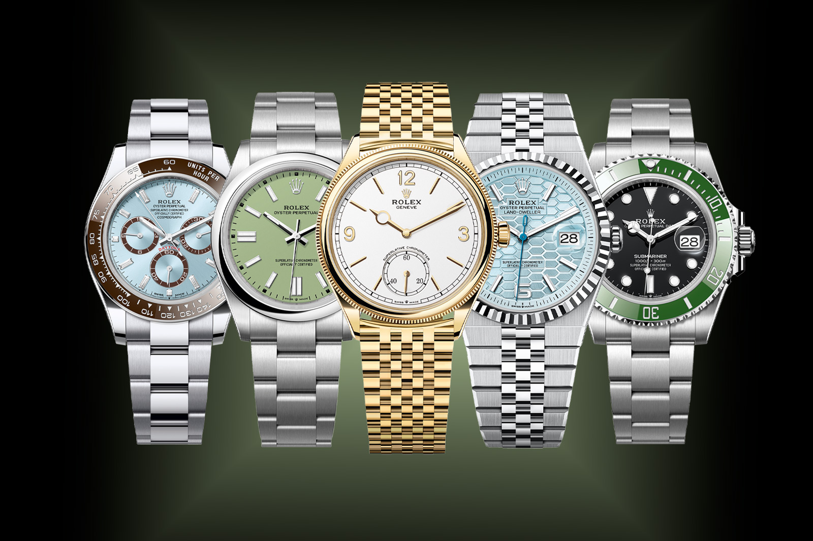

This is the landing page for Rolex made by Rainier Julliane G. Dela Cruz.
This is activity#5 for WEB subject.
Hope you can navigate this landing page well.
Just use the 4 navigation buttons on the upper right corner.

Rolex was founded in 1905 in London as Wilsdorf and Davis by Hans Wilsdorf and Alfred Davis, and the brand name "Rolex" was registered in 1908 to create a distinctive, easily pronounceable identity for its watches The company moved its headquarters to Geneva, Switzerland, in 1919 due to post-war economic challenges and later became Montres Rolex SA, now known simply as Rolex SA Since 1960, it has been owned by the Hans Wilsdorf Foundation, a private family trust
PROGRAMS OFFERED BY ROLEX ARE MOSTLY WATCHES THAT CAN BE CUSTOM MADE TO MATCH THE BUYER'S OWN PERCEPTION ALSO YOU CAN USE THEIR WATCH TO FLEX ON ALL YOUR OPPS.